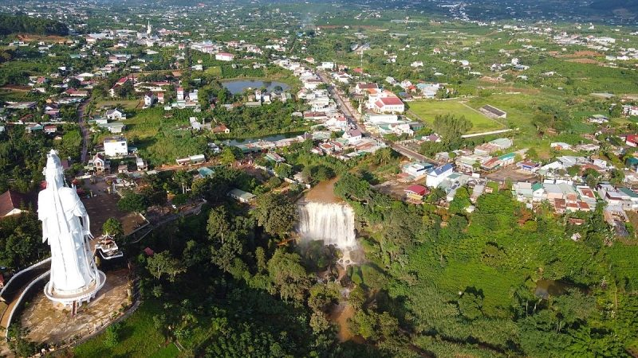
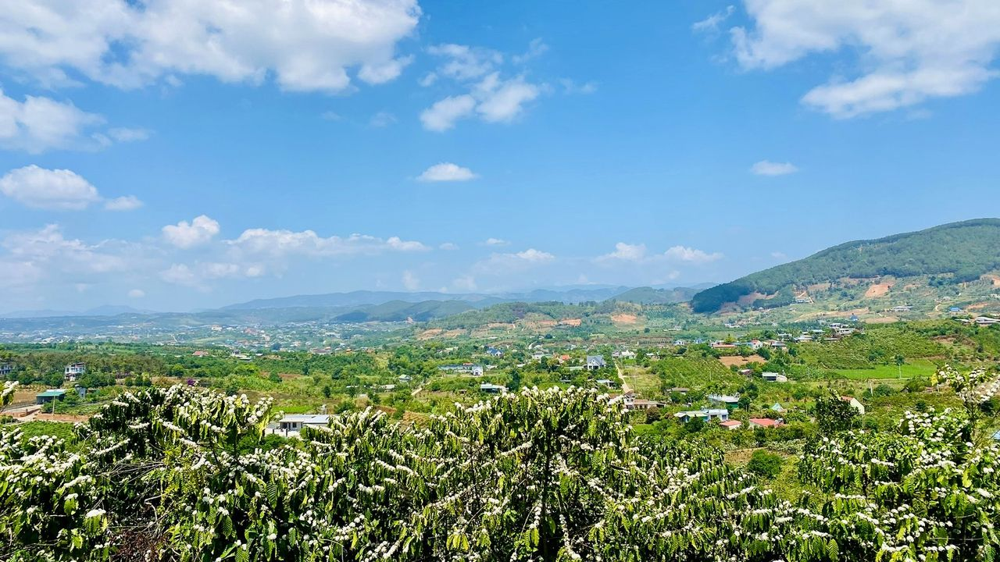

Quy hoạch có thể làm một vùng đất tăng giá — hoặc chỉ làm nó được nhắc tên nhiều hơn; người mua để ở và người đầu cơ thường đọc cùng một bản đồ theo hai cách rất khác nhau. Ngày 6/6/2026, tỉnh Lâm Đồng ký quyết định phê duyệt bản quy hoạch đến năm 2050. Lần đầu tiên, tương lai của Nam Ban có một văn bản gốc để đọc — thay vì tin đồn. Đây là những gì bản đồ mới thực sự nói.
Theo Quyết định 2786/QĐ-UBND (6/6/2026), xã Nam Ban Lâm Hà thuộc Vùng trung tâm phía Bắc Lâm Đồng — cùng vùng với Đà Lạt, không phải vùng khai khoáng phía Tây như nhiều nơi nói nhầm. Định hướng: đô thị sinh thái – nghỉ dưỡng, tiểu vùng Lâm Hà. Nằm giữa hai cửa ngõ: Đà Lạt ~27km, sân bay Liên Khương ~20km. Bản đồ xác nhận vị trí và chức năng; điều nó chưa nói là tiến độ và nguồn vốn thực hiện.

Trong nhiều tháng, câu chuyện về tương lai Nam Ban chủ yếu sống bằng tin đồn: lời chào của môi giới, ảnh chụp màn hình bản đồ không rõ nguồn, và những con số tăng giá được truyền miệng. Giờ thì khác. Có một văn bản gốc.
Ngày 6/6/2026, Phó Chủ tịch UBND tỉnh Lâm Đồng ký Quyết định 2786/QĐ-UBND phê duyệt điều chỉnh Quy hoạch tỉnh Lâm Đồng thời kỳ 2021–2030, tầm nhìn đến năm 2050. Đây là quy hoạch của tỉnh Lâm Đồng mới — hợp nhất từ ba tỉnh cũ Lâm Đồng, Đắk Nông và Bình Thuận, với tổng diện tích 24.239 km² và 124 đơn vị hành chính cấp xã, trải dài từ cao nguyên xuống tận biển Đông.
Với một người đang cân nhắc bỏ tiền vào Nam Ban, văn bản này quan trọng hơn mọi lời chào hàng. Vì nó trả lời đúng câu hỏi mà brief trước để ngỏ: khi bản đồ được vẽ lại, Nam Ban rơi vào ô nào?
Đây là điểm dễ nhầm nhất — và nhiều nơi đang nói sai. Theo Quyết định 2786, xã Nam Ban Lâm Hà không nằm ở "phía Tây" tỉnh (vùng Đắk Nông cũ với bô-xít và công nghiệp nặng), mà thuộc Vùng trung tâm phía Bắc Lâm Đồng — cùng một vùng với thành phố Đà Lạt, Lạc Dương và Đam Rông.
Cụ thể hơn, Nam Ban Lâm Hà nằm trong tiểu vùng Lâm Hà (gồm Nam Ban Lâm Hà, Nam Hà Lâm Hà và Phú Sơn Lâm Hà) — một mảnh ghép trực tiếp trong không gian phát triển lấy Đà Lạt làm hạt nhân. Sự khác biệt này không nhỏ: nó quyết định Nam Ban sẽ được định hình bởi câu chuyện nghỉ dưỡng cao nguyên, chứ không phải câu chuyện khai khoáng.
Quyết định 2786 nêu định hướng cho Vùng trung tâm phía Bắc rất rõ ràng: trở thành trung tâm văn hóa, giáo dục — đào tạo, khoa học kỹ thuật, đổi mới sáng tạo và du lịch sinh thái nghỉ dưỡng tầm quốc tế.
Còn riêng tiểu vùng Lâm Hà — nơi có Nam Ban — định hướng được ghi gần như đo ni đóng giày cho loại tài sản mà vùng đất này vốn có:
Quan trọng hơn: Phụ lục I của Quyết định 2786 xếp xã Nam Ban Lâm Hà là đô thị loại III — cả hiện trạng 2026 lẫn quy hoạch đến 2030. Không phải danh xưng do môi giới tự phong.
Nói cách khác: nếu phải chọn một định hướng tốt nhất cho một vùng đất muốn phát triển bền vững và có giá trị, thì đây gần như là kịch bản lý tưởng. Đây là cơ sở thực sự cho sự lạc quan về Nam Ban — không phải vì ai đó nói giá sắp tăng, mà vì văn bản gốc đặt vùng đất này vào đúng nhóm có giá trị cao nhất.
Đà Lạt được quy hoạch là "điểm đến của Việt Nam và Đông Nam Á về nghỉ dưỡng" — và sẽ cần các đô thị vệ tinh san sẻ áp lực. Nam Ban đứng ngay trong vành đai đó.
Quy hoạch xác định Đà Lạt phát triển cùng các đô thị vệ tinh như Lạc Dương, Di Linh, Đơn Dương, Đức Trọng để giảm áp lực cho đô thị lõi. Khi Đà Lạt ngày càng đắt đỏ và chật chội, dòng người tìm "khí hậu Đà Lạt với giá vùng ven" sẽ chảy ra các vành đai. Nam Ban — cùng vùng phía Bắc, cách Đà Lạt khoảng nửa giờ — nằm đúng hướng dòng chảy đó.

Ở đây cũng có một nhầm lẫn phổ biến cần chỉnh: tuyến cao tốc Phan Thiết – Bảo Lộc – Gia Nghĩa thường được nhắc như "đường về Nam Ban", nhưng theo quy hoạch, trục đó phục vụ hành lang phía Nam và Tây Nam của tỉnh. Cửa ngõ thật sự của Nam Ban nằm ở hướng khác — và mạnh hơn nhiều:
Điểm mấu chốt: giá trị kết nối của Nam Ban không đến từ một con đường chạy ngang qua nó, mà đến từ việc nó nằm sát đầu mối hàng không và cao tốc của cả cao nguyên. Đó là một lợi thế bền hơn nhiều so với một dự án đường đơn lẻ.
Nam Ban không phát triển trong chân không. Nó nằm trong một tỉnh đặt mục tiêu tăng trưởng vào nhóm cao nhất nước:
Một dòng vốn quy mô như vậy đổ vào hạ tầng, đô thị và du lịch của tỉnh sẽ lan tỏa tới các vành đai vệ tinh. Nam Ban là một trong những vành đai đó.
Đến đây, một bài chào hàng sẽ dừng lại ở phần lạc quan. Bản tin này thì không. Vì toàn cảnh trung thực phải gồm cả những khoảng trống:
Quan trọng hơn — và đây là nghịch lý ít người nói: chính định hướng "bảo tồn thiên nhiên, đa dạng sinh học" tạo nên giá trị nghỉ dưỡng của vùng cũng đồng nghĩa với việc một phần đất đai sẽ thuộc khu vực bảo vệ, hạn chế phát triển. Cùng một dòng chữ vừa tạo ra cơ hội, vừa vẽ ra vùng cấm. Người mua khôn ngoan phải biết thửa đất của mình nằm ở phía nào của ranh giới đó.
Nói gọn lại, Nam Ban giờ đã có một bản đồ thật, và hướng đi của nó nghiêng hẳn về điều tích cực — đô thị sinh thái, nghỉ dưỡng, nông nghiệp công nghệ cao, trong vành đai của một Đà Lạt đang quá tải. Đó là lý do chính đáng để lạc quan.
Nhưng đọc bản đồ đúng cách quan trọng hơn là tin vào lời chào. Cơ hội ở Nam Ban là có thật — câu hỏi tiếp theo là loại tài sản nào và vị trí nào mới thực sự hưởng lợi. Đó là nội dung của bài phân tích tiềm năng đầu tư.
Quy hoạch là nền tảng quan trọng — nhưng nó là điểm khởi đầu, không phải lý do để mua. Phân khu chi tiết từng thửa đất vẫn chờ quy hoạch cấp xã, và tiến độ hạ tầng thực tế có thể khác xa định hướng trên giấy. Thay vì hỏi "quy hoạch này có làm giá đất tăng không", có lẽ câu hỏi đáng suy nghĩ hơn là:
Nếu giá đất không tăng trong 1, 2 năm tới, mình có còn muốn sở hữu mảnh đất này không?
Quyết định 2786/QĐ-UBND ngày 6/6/2026 của UBND tỉnh Lâm Đồng về phê duyệt điều chỉnh Quy hoạch tỉnh Lâm Đồng thời kỳ 2021–2030, tầm nhìn đến năm 2050 (Mục II–IV và phần Vùng trung tâm phía Bắc Lâm Đồng, tiểu vùng Lâm Hà). Phân loại đô thị loại III của xã Nam Ban Lâm Hà theo Phụ lục I (Phương hướng phát triển hệ thống đô thị), dòng 23, giai đoạn đến 2030.
Trên cơ sở Nghị quyết 202/2025/QH15 và Nghị quyết 1671/NQ-UBTVQH15 về sắp xếp đơn vị hành chính.
Bản phân tích này mang tính tham khảo độc lập, không phải tư vấn pháp lý hay khuyến nghị đầu tư cá nhân. Trước mọi giao dịch, hãy đối chiếu văn bản pháp quy gốc và quy hoạch chi tiết được công bố.
Panorama có báo cáo đọc quy hoạch Nam Ban đến 2050 — bản đồ 4 phân khu, vùng nào được xây nhà ở, vùng nào bảo tồn không nên mua. Gửi riêng kèm phần trả lời cho khu bạn đang quan tâm.
Xem báo cáo bản đồ quy hoạch →